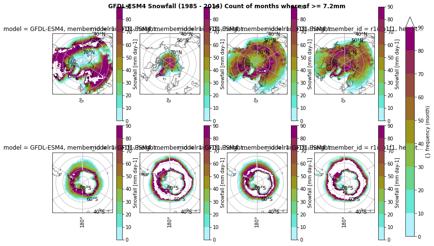
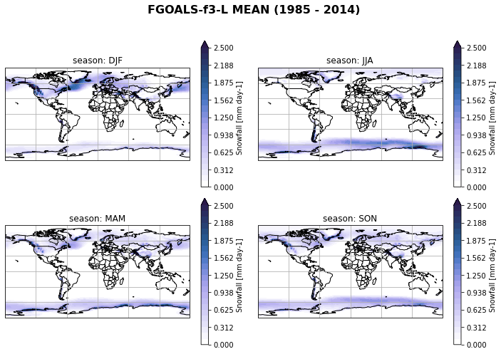
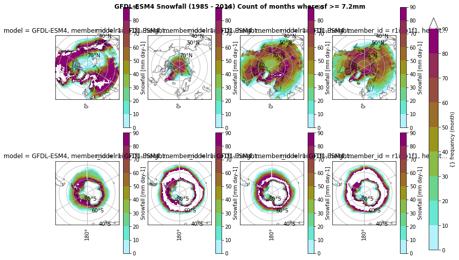
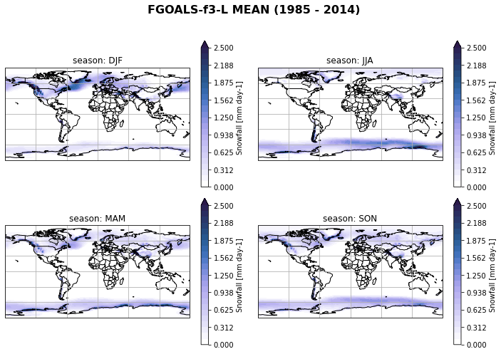
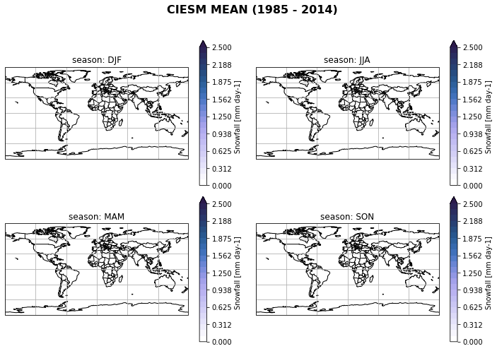
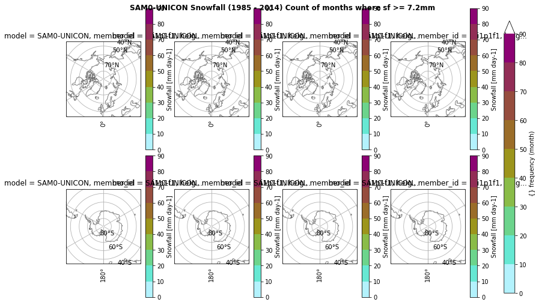
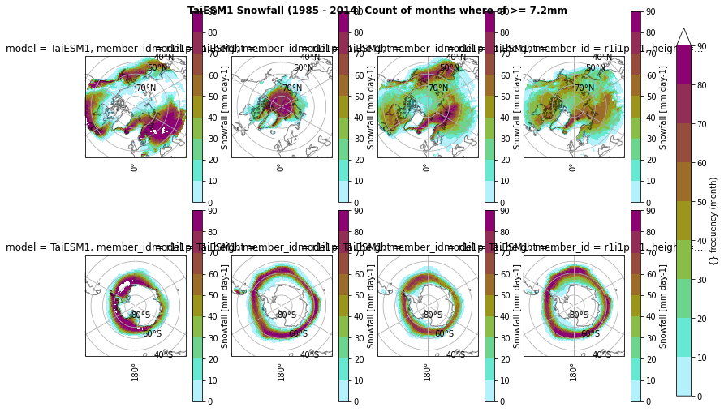
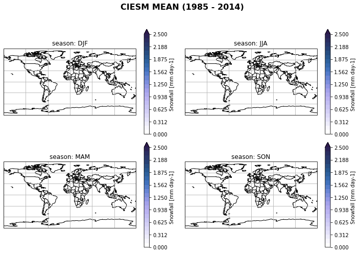
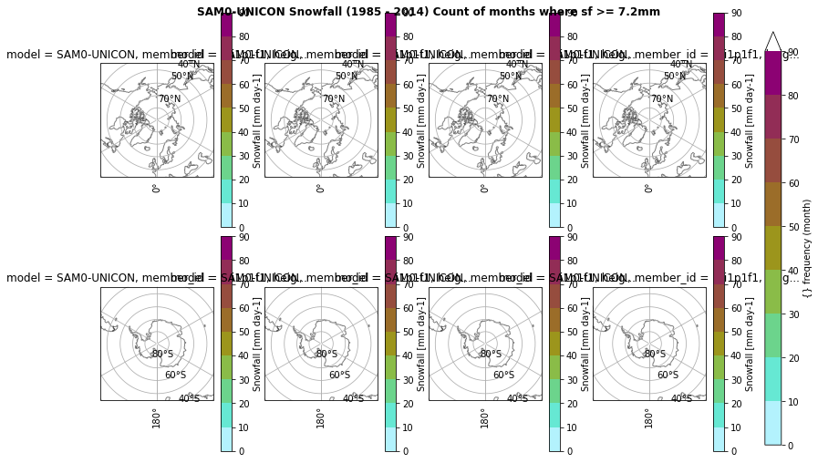
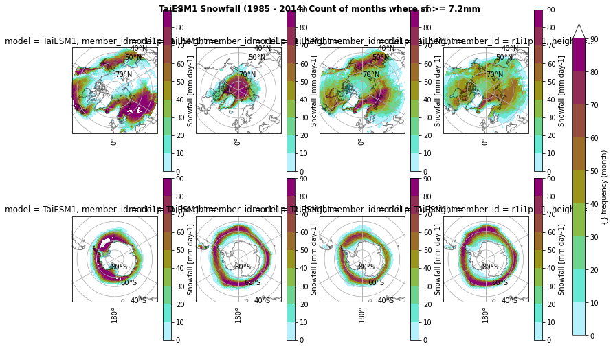

Example with high-resolution CMIP6 models (~100 km) using Pangeo catalog
Contents
Example with high-resolution CMIP6 models (~100 km) using Pangeo catalog¶
Table of Contents¶
1. Introduction ¶
Cloud feedbacks are a major contributor to the spread of climate sensitivity in global climate models (GCMs) Zelinka et al. (2020). Among the most poorly understood cloud feedbacks is the one associated with the cloud phase, which is expected to be modified with climate change Bjordal et al. (2020). Cloud phase bias, in addition, has significant implications for the simulation of radiative properties and glacier and ice sheet mass balances in climate models.
In this context, this work aims to expand our knowledge on how the representation of the cloud phase affects snow formation in GCMs. Better understanding this aspect is necessary to develop climate models further and improve future climate predictions.
Retrieve CMIP6 data through Pangeo
Hybrid sigma-pressure coordinates to isobaric pressure levels of the European Centre for Medium-Range Weather Forecast Re-Analysis 5 (ERA5) with GeoCAT-comb
Regridd the CMIP6 variables to the exact horizontal resolution with
xesmfCalculate an ensemble mean of all used models
Calculate and plot the seasonal mean of the ensemble mean
Questions
How is the cloud phase and snowfall varying between 1985 and 2014?
NOTE: We answer questions related to the comparison of CMIP models to ERA5 in another Jupyter Notebook.
2. Data Wrangling ¶
This study will compare surface snowfall, ice, and liquid water content from the Coupled Model Intercomparison Project Phase 6 (CMIP6) climate models (accessed through Pangeo) to the European Centre for Medium-Range Weather Forecast Re-Analysis 5 (ERA5) data from 1985 to 2014. We conduct statistical analysis at the annual and seasonal timescales to determine the biases in cloud phase and precipitation (liquid and solid) in the CMIP6 models and their potential connection between them.
Time period: 1985 to 2014
horizonal resolution: ~100km
time resolution: monthly atmospheric data (Amon, AERmon)
Variables:
shortname |
Long name |
Units |
levels |
|---|---|---|---|
prsn |
Snowfall Flux |
[kg m-2 s-1] |
surface |
clw |
Mass Fraction of Cloud Liquid Water |
[kg kg-1] |
ml |
cli |
Mass Fraction of Cloud Ice |
[kg kg-1] |
ml |
tas |
Near-Surface Air Temperature |
[K] |
surface |
ta |
Air Temperature |
[K] |
plev |
clivi |
Ice Water Path |
[kg m-2] |
|
lwp |
Liquid Water Path |
[kg m-2] |
|
pr |
Precipitation |
[kg m-2 s-1] |
surface |
CMIP6 models:
Institution |
Model name |
Reference |
|---|---|---|
TaiESM1 |
||
BCC-CSM2-M |
||
CAMS-CSM1-0 |
||
FGOALS-f3-L |
||
CMCC-CM2-SR5 |
||
CMCC-CM2-HR4 |
||
CMCC-ESM2 |
||
EC-Earth3-AerChem |
||
E3SM-1-1 |
Golaz et al. (2019); Burrows et al. (2020) Text S8 |
|
E3SM-1-1-ECA |
||
MPI-ESM1-2-HR |
||
MRI-ESM2-0 |
||
NorESM2-MM |
||
GFDL-CM4 |
||
GFDL-ESM4 |
||
SAM0-UNICON |
||
CIESM |
Organize my data¶
Define a prefix for my project (you may need to adjust it for your own usage on your infrastructure).
input folder where all the data used as input to my Jupyter Notebook is stored (and eventually shared)
output folder where all the results to keep are stored
tool folder where all the tools
import os
import pathlib
import sys
import socket
hostname = socket.gethostname()
abs_path = str(pathlib.Path(hostname).parent.absolute())
WORKDIR = abs_path[:- (len(abs_path.split('/')[-2] + abs_path.split('/')[-1])+1)]
if "mimi" in hostname:
print(hostname)
DATA_DIR = "/scratch/franzihe/"
FIG_DIR = "/uio/kant/geo-metos-u1/franzihe/Documents/Figures/CMIP6/"
elif "glefsekaldt" in hostname:
DATA_DIR = "/home/franzihe/Data/"
FIG_DIR = "/home/franzihe/Documents/Figures/CMIP6/"
INPUT_DATA_DIR = os.path.join(DATA_DIR, 'input')
OUTPUT_DATA_DIR = os.path.join(DATA_DIR, 'output')
UTILS_DIR = os.path.join(WORKDIR, 'utils')
sys.path.append(UTILS_DIR)
# make figure directory
try:
os.mkdir(FIG_DIR)
except OSError:
pass
mimi.uio.no
Import python packages¶
Pythonenvironment requirements: file requirements_globalsnow.txtload
pythonpackages from imports.pyload
functionsfrom functions.py
# supress warnings
import warnings
warnings.filterwarnings('ignore') # don't output warnings
# import packages
from imports import (xr, intake, cftime, xe, glob, np, cm, pd, fct,ccrs, cy, plt, da, gc)
xr.set_options(display_style="html")
<xarray.core.options.set_options at 0x7fb9d75da250>
# reload imports
%load_ext autoreload
%autoreload 2
Open CMIP6 online catalog¶
… by using intake from pangeo.io, specifically intake-esm.
An example on Loading an ESM collection and searching for datasets can also be found on the Pangeo / ESGF Cloud Data Working Group documentation.
cat_url = "https://storage.googleapis.com/cmip6/pangeo-cmip6.json"
col = intake.open_esm_datastore(cat_url)
col
pangeo-cmip6 catalog with 7686 dataset(s) from 514961 asset(s):
| unique | |
|---|---|
| activity_id | 18 |
| institution_id | 36 |
| source_id | 88 |
| experiment_id | 170 |
| member_id | 657 |
| table_id | 37 |
| variable_id | 700 |
| grid_label | 10 |
| zstore | 514961 |
| dcpp_init_year | 60 |
| version | 737 |
Search corresponding data¶
Get the data required for the analysis. Define variables, models, experiment, and time resolution as defined in 2. Data Wrangling .
use member_id = ‘r1i1p1f1’.
using intake-esm’s
search()function:col.search(variable_id, source_id, experiment_id, table_id, member_id, institution_id, grid_label)
## Variables
variable_id=[
'cli',
'clivi',
'clw',
'lwp',
'pr',
'prsn',
'ta',
'tas'
]
## Models
list_models = [
'NorESM2-MM',
'TaiESM1',
'EC-Earth3-AerChem',
'GFDL-ESM4',
'SAM0-UNICON',
'CAMS-CSM1-0',
'CMCC-CM2-HR4',
'MPI-ESM1-2-HR',
'BCC-CSM2-MR',
'E3SM-1-1',
'CMCC-CM2-SR5',
'CMCC-ESM2',
'FGOALS-f3-L',
'E3SM-1-1-ECA',
'CIESM',
'GFDL-CM4',
'MRI-ESM2-0']
## experiment
experiment_id = ['historical']
## time resolution
t_res = ['Amon', 'AERmon']
## search for variables, models, ...
cat = col.search(variable_id=variable_id, source_id=list_models, experiment_id=experiment_id, table_id = t_res, member_id=['r1i1p1f1'])
# cat.df
## show the CMIP6 models found in pandas Dataframe
cat.df['source_id'].unique()
array(['GFDL-CM4', 'BCC-CSM2-MR', 'MRI-ESM2-0', 'SAM0-UNICON',
'CAMS-CSM1-0', 'MPI-ESM1-2-HR', 'GFDL-ESM4', 'FGOALS-f3-L',
'NorESM2-MM', 'E3SM-1-1', 'E3SM-1-1-ECA', 'CIESM', 'CMCC-CM2-SR5',
'TaiESM1', 'EC-Earth3-AerChem', 'CMCC-CM2-HR4', 'CMCC-ESM2'],
dtype=object)
Create dictionary from the list of datasets we found¶
Load the found datasets into xarray dataset containers using intake-esm’s to_dataset_dict() function, which yields a Python dictionary.
NOTE: This step may take several minutes so be patient!
dset_dict = cat.to_dataset_dict(zarr_kwargs={'use_cftime':True,})
--> The keys in the returned dictionary of datasets are constructed as follows:
'activity_id.institution_id.source_id.experiment_id.table_id.grid_label'
# list all merged datasets and show coordinates
for keys, ds in dset_dict.items():
print('{}: {}'.format(keys, list(ds.dims)))
CMIP.AS-RCEC.TaiESM1.historical.AERmon.gn: ['lat', 'bnds', 'lon', 'member_id', 'time']
CMIP.EC-Earth-Consortium.EC-Earth3-AerChem.historical.AERmon.gr: ['lat', 'bnds', 'lon', 'member_id', 'time']
CMIP.NCC.NorESM2-MM.historical.AERmon.gn: ['lat', 'bnds', 'lon', 'member_id', 'time']
CMIP.NOAA-GFDL.GFDL-ESM4.historical.AERmon.gr1: ['bnds', 'lat', 'lon', 'member_id', 'time']
CMIP.NOAA-GFDL.GFDL-ESM4.historical.Amon.gr1: ['lev', 'bnds', 'member_id', 'time', 'lat', 'lon', 'plev']
CMIP.THU.CIESM.historical.Amon.gr: ['lev', 'bnds', 'member_id', 'time', 'lat', 'lon', 'plev']
CMIP.NOAA-GFDL.GFDL-CM4.historical.Amon.gr1: ['lev', 'bnds', 'member_id', 'time', 'lat', 'lon', 'plev']
CMIP.CMCC.CMCC-CM2-HR4.historical.Amon.gn: ['lev', 'bnds', 'member_id', 'time', 'lat', 'lon', 'plev']
CMIP.CAMS.CAMS-CSM1-0.historical.Amon.gn: ['lev', 'bnds', 'member_id', 'time', 'lat', 'lon', 'plev']
CMIP.MPI-M.MPI-ESM1-2-HR.historical.Amon.gn: ['time', 'lev', 'bnds', 'member_id', 'lat', 'lon', 'plev']
CMIP.AS-RCEC.TaiESM1.historical.Amon.gn: ['lev', 'bnds', 'member_id', 'time', 'lat', 'lon', 'plev']
CMIP.CMCC.CMCC-ESM2.historical.Amon.gn: ['lev', 'bnds', 'member_id', 'time', 'lat', 'lon', 'plev']
CMIP.CMCC.CMCC-CM2-SR5.historical.Amon.gn: ['lev', 'bnds', 'member_id', 'time', 'lat', 'lon', 'plev']
CMIP.SNU.SAM0-UNICON.historical.Amon.gn: ['lev', 'bnds', 'member_id', 'time', 'lat', 'lon', 'plev']
CMIP.MRI.MRI-ESM2-0.historical.Amon.gn: ['lev', 'bnds', 'member_id', 'time', 'lat', 'lon', 'plev']
CMIP.NCC.NorESM2-MM.historical.Amon.gn: ['lev', 'bnds', 'member_id', 'time', 'lat', 'lon', 'plev']
CMIP.CAS.FGOALS-f3-L.historical.Amon.gr: ['lev', 'bnds', 'member_id', 'time', 'lat', 'lon', 'plev']
CMIP.BCC.BCC-CSM2-MR.historical.Amon.gn: ['lev', 'bnds', 'member_id', 'time', 'lat', 'lon', 'plev']
CMIP.E3SM-Project.E3SM-1-1.historical.Amon.gr: ['lev', 'bnds', 'member_id', 'time', 'lat', 'lon', 'plev']
CMIP.E3SM-Project.E3SM-1-1-ECA.historical.Amon.gr: ['lev', 'bnds', 'member_id', 'time', 'lat', 'lon', 'plev']
CMIP.EC-Earth-Consortium.EC-Earth3-AerChem.historical.Amon.gr: ['lev', 'bnds', 'member_id', 'time', 'lat', 'lon', 'plev']
Calendar¶
Not all models in CMIP6 use the same calendar. Hence we double check the time axis. Later, when we regrid to the same horizontal resolution (Regrid CMIP6 data) we will assign the same calendars for each model.
# metadata of the historical run:
_d2 = pd.Series(["calendar",
"branch_time_in_parent", #"parent_activity_id", "parent_experiment_id", "parent_mip_era",
"parent_source_id",#"parent_sub_experiment_id",
"parent_time_units",# "parent_variant_label"
])
_d2 = pd.DataFrame(_d2).rename(columns={0:'index'})
for i in dset_dict.keys():
_data = []
_names =[]
_data.append(dset_dict[i].time.to_index().calendar)
for k, v in dset_dict[i].attrs.items():
if 'parent_time_units' in k or 'branch_time_in_parent' in k or 'parent_source_id' in k:
_data.append(v)
_names.append(k)
_d2 = pd.concat([_d2, pd.Series(_data)], axis=1)
_d2.dropna(how='all', axis=1, inplace=True)
_d2 = _d2.set_index('index')
_d2.columns = _d2.loc['parent_source_id']
_d2.drop('parent_source_id').T
| index | calendar | branch_time_in_parent | parent_time_units |
|---|---|---|---|
| parent_source_id | |||
| TaiESM1 | noleap | 171550.0 | days since 1850-01-01 |
| EC-Earth3-AerChem | proleptic_gregorian | 0.0 | days since 1850-01-01 |
| NorESM2-MM | noleap | 438000.0 | days since 0001-01-01 |
| GFDL-ESM4 | noleap | 36500.0 | days since 0001-1-1 |
| days since 0001-1-1 | noleap | GFDL-ESM4 | 36500.0 |
| days since 0001-01-01 | noleap | CIESM | 182500.0 |
| days since 0001-1-1 | noleap | GFDL-CM4 | 36500.0 |
| days since 1850-01-01 | noleap | CMCC-CM2-HR4 | 0.0 |
| days since 1850-01-01 | noleap | CAMS-CSM1-0 | 3025.0 |
| days since 1850-1-1 00:00:00 | proleptic_gregorian | MPI-ESM1-2-HR | 0.0 |
| days since 1850-01-01 | noleap | TaiESM1 | 171550.0 |
| days since 1850-01-01 | noleap | CMCC-ESM2 | 0.0 |
| days since 1850-01-01 | noleap | CMCC-CM2-SR5 | 0.0 |
| days since 0001-01-01 | noleap | SAM0-UNICON | 99645.0 |
| days since 1850-01-01 | proleptic_gregorian | MRI-ESM2-0 | 0.0 |
| days since 0001-01-01 | noleap | NorESM2-MM | 438000.0 |
| days since 0001-01-01 | noleap | FGOALS-f3-L | 12345.0 |
| days since 1850-01-01 | noleap | BCC-CSM2-MR | 2289.0 |
| days since 0001-01-01 | noleap | E3SM-1-1 | 0.0 |
| days since 0001-01-01 | noleap | E3SM-1-1-ECA | 0.0 |
| days since 1850-01-01 | proleptic_gregorian | EC-Earth3-AerChem | 0.0 |
Show attributes and individual identifier¶
NorESM2-MM is going to be the reference model for the horizontal grid. The xarray datasets inside dset_dict can be extracted as any value in a Python dictionary.
The dictonary key for NorESM2-MM is: CMIP.NCC.NorESM2-MM.historical.Amon.gn
if variable_id[0] == 'lwp':
ds = dset_dict['CMIP.NCC.NorESM2-MM.historical.AERmon.gn']
else:
ds = dset_dict['CMIP.NCC.NorESM2-MM.historical.Amon.gn']
## attributes of the xarray dataset
ds[variable_id[0]].attrs, ds.attrs['tracking_id']
({'cell_measures': 'area: areacella',
'cell_methods': 'area: time: mean',
'comment': 'Includes both large-scale and convective cloud. This is calculated as the mass of cloud ice in the grid cell divided by the mass of air (including the water in all phases) in the grid cell. It includes precipitating hydrometeors ONLY if the precipitating hydrometeors affect the calculation of radiative transfer in model.',
'history': "2019-11-25T21:51:40Z altered by CMOR: Converted units from '1' to 'kg kg-1'. 2019-11-25T21:51:41Z altered by CMOR: Converted type from 'd' to 'f'. 2019-11-25T21:51:41Z altered by CMOR: Inverted axis: lev.",
'long_name': 'Mass Fraction of Cloud Ice',
'original_name': 'CLDICE',
'original_units': '1',
'standard_name': 'mass_fraction_of_cloud_ice_in_air',
'units': 'kg kg-1'},
'hdl:21.14100/bdfd7dd4-b7a4-4c0e-b79c-28a1dfcf57dd\nhdl:21.14100/ee267138-b752-4170-b1b5-216449dd1268\nhdl:21.14100/313c20af-b8bd-437f-ba76-e341512e01cb\nhdl:21.14100/a6d7cb7a-0775-4ed4-8ec1-ba3e504ff8bc\nhdl:21.14100/cf13a474-dd65-4ac9-85d8-a4e91453c2a5\nhdl:21.14100/d1e77260-e1b3-4f69-8a55-7b7b08268f92\nhdl:21.14100/7d2f9ff6-5dba-486b-b26c-83449441be37\nhdl:21.14100/4bd7e622-d889-4148-8fd2-c51503df6210\nhdl:21.14100/ec908d5b-4bfd-456f-ab91-d7ca825b71e6\nhdl:21.14100/39275014-6e35-4859-b2d1-cbfd2fefeaab\nhdl:21.14100/02eb7701-6c97-4349-acf6-85a6e5b2e4b3\nhdl:21.14100/24665b73-7508-4647-93c0-be93d452554b\nhdl:21.14100/74b3476f-b4db-4006-9577-dac4c0fc4ba0\nhdl:21.14100/c3fab37d-21d7-470c-9f4d-f480bdffc64d\nhdl:21.14100/6946c90a-b26b-4d75-969a-e7659c2877b8\nhdl:21.14100/20dc7a63-02bc-4d1e-a2ac-9f23b707a2ec\nhdl:21.14100/3d7be3a4-c1e2-4657-9d09-68349f58159d\nhdl:21.14100/4576a6a4-21eb-401f-ab73-5d1f13c89f42\nhdl:21.14100/a0e47031-94d9-48a4-9a35-e008ec3bef1d\nhdl:21.14100/32e0ed01-ea5d-4b0b-a20e-f91e387ca569\nhdl:21.14100/18ea3cba-6cc9-49a9-b187-1d0be93c8ef5\nhdl:21.14100/bd923348-9aa1-4ad0-9efc-37288b19a933\nhdl:21.14100/95758127-f854-4fb0-b926-3ec4c4d95340\nhdl:21.14100/bf47f517-d03a-4e70-9504-563c825f1782\nhdl:21.14100/1686b8a1-4074-46d5-80ac-1c8a645b1fb4\nhdl:21.14100/f76f66be-aeae-49f0-8c98-2851d67a3de4\nhdl:21.14100/95a4d1c4-ad2d-425b-85f0-22d1ccc4f943\nhdl:21.14100/2c293851-7402-451a-80af-e21cd0eba6c2\nhdl:21.14100/69b4bae2-7e14-4386-b4ae-55f5c8fbcceb\nhdl:21.14100/793f3341-d4f6-465b-b391-cb4db029d09e\nhdl:21.14100/18f93468-a290-4ede-9585-29c4ff55efaa\nhdl:21.14100/128d940b-c6d9-4304-9b3b-40c2a7021d0d\nhdl:21.14100/7ef0b75e-5f11-4da9-a61b-d9b5eb08073f\nhdl:21.14100/7adb44a6-fa3b-4893-9560-c3377f29ee5f\nhdl:21.14100/1c8e58a1-c250-4120-9fb6-159885cd5a96\nhdl:21.14100/c1340042-4644-4d38-9270-d000d8d14b19\nhdl:21.14100/c7f9967e-a7a9-44ae-bbb5-4b5a02c5a7b3\nhdl:21.14100/34449e11-fad2-4fea-82c8-19e194f8d7f5\nhdl:21.14100/fd79dd4c-b2aa-4290-83a2-07dce463a1c0\nhdl:21.14100/b548a684-f49f-4dac-b1a9-acc24a8ff750\nhdl:21.14100/66f04c76-793d-4a11-bed4-040d3b0b7de5\nhdl:21.14100/8e53004f-a51b-4fcb-b4db-cafd3cb33de3\nhdl:21.14100/c0b36dc0-7408-462a-a3da-849bda149260\nhdl:21.14100/5410d0a1-9def-42b7-91a0-d959a6650d4a\nhdl:21.14100/23e3e9fd-2131-4952-b5eb-36f058178ab2\nhdl:21.14100/e2948317-3a1d-4627-822c-03ed8097c2ed\nhdl:21.14100/be8f947a-bf1e-4a2f-9320-e33d65ef2b6c\nhdl:21.14100/8c2c2821-597e-45f9-8990-ba520145b33c\nhdl:21.14100/1c1b0353-cd70-47e6-8c17-676783f1a93b\nhdl:21.14100/214acf85-5eb2-4924-b063-adc28c657692\nhdl:21.14100/11406d14-0f70-44f6-ae0d-6c246f1305e3\nhdl:21.14100/240f3d7a-faa9-4e7a-aeab-7a842635dcc3\nhdl:21.14100/554fb9db-fdc0-425c-ac68-146cba77f8cb\nhdl:21.14100/7235eb45-2da1-4bb8-bd16-467256066116\nhdl:21.14100/f2188a57-eff0-4ab9-8263-a6654349ee18\nhdl:21.14100/3fdefb99-9db8-44c1-9a51-885f6db62cfa\nhdl:21.14100/f50ff646-df59-4eac-8080-e5da16e5d778\nhdl:21.14100/2fde10fe-1e37-4a93-ac9c-a34b8de5a606\nhdl:21.14100/25d85a61-ac30-49cd-985b-66d121e4d388\nhdl:21.14100/a83c191a-d59b-4079-87f3-8caa874fce06\nhdl:21.14100/23263a30-65b9-4887-b46c-253af00861e6\nhdl:21.14100/cbea6d5b-68dd-4db8-9500-8e2d1bcf11be\nhdl:21.14100/457e8153-b9e8-4e0a-a339-4b0f37c2992d\nhdl:21.14100/28e89d10-aa46-4629-9f96-07eb18d42bcc\nhdl:21.14100/4fe3cdb8-8434-497d-88b3-9eff0eab6264\nhdl:21.14100/4b34d44c-c673-419e-b5bb-cd01c5f382d6\nhdl:21.14100/20b0215a-3e8e-474b-9513-a80f45805ad2\nhdl:21.14100/e484b416-c59c-4ac2-bd9a-9ba2a3047d6a\nhdl:21.14100/befe4a85-4c28-4df7-9efe-0232a75ad2bc\nhdl:21.14100/9be130fb-934e-429b-84f1-77bee253059b\nhdl:21.14100/45a7fb91-c21b-42aa-8b7b-ca4fccee3d82\nhdl:21.14100/550cfa82-7d5f-484d-bcd8-375b6bf9cd28\nhdl:21.14100/809d1eee-9b32-4314-9c47-570edddcde9d\nhdl:21.14100/b5a65d62-f8fc-4b13-8a36-8a6a0fc8f64c\nhdl:21.14100/f1ba6e0d-af4f-419d-a762-d4ca5b3e0fd8\nhdl:21.14100/2492e2d8-23ed-4ddf-9a89-2e48df0d5933\nhdl:21.14100/1bda4adf-11a3-4b39-9a30-808ac443c79e\nhdl:21.14100/f2889793-851e-4ccd-b303-4d03e27ba56b\nhdl:21.14100/49e57aae-a8c0-426d-abd9-ffe68548a7b4\nhdl:21.14100/d2082e93-5bbe-4737-801f-c5d289f2c656\nhdl:21.14100/058f0e3d-126b-402c-8c57-26d915d617c6\nhdl:21.14100/d6659ea1-7c7d-49cb-b399-08d5541b6423\nhdl:21.14100/eda3b060-ad9f-4ea8-834c-850d811cd41d\nhdl:21.14100/d5c82405-0ebc-42bb-82ac-2202181bbd35\nhdl:21.14100/a408357d-ef9b-40a8-9b59-89c3a5d4958e\nhdl:21.14100/164a18b5-95a5-498f-89ad-f3cfa8dbb9ae\nhdl:21.14100/b726dcce-04e7-41ef-8f32-a36cffa516bd\nhdl:21.14100/69786839-c0a1-45de-935b-13a04e382fd7\nhdl:21.14100/9e97d612-10a7-458a-980e-fe4d4cac4bdb\nhdl:21.14100/0d51a98d-e849-48ae-82b4-9b2fb8f8c223\nhdl:21.14100/0966ef7c-613e-4fcc-81f5-c7e0811a8f34\nhdl:21.14100/f4ac8ec2-30a2-4cb4-a7f6-c501e812baf6\nhdl:21.14100/0daf9460-21f8-48a5-930d-cc1f74812994\nhdl:21.14100/bda027e9-7c49-44f5-bb08-52e8b14e612d\nhdl:21.14100/6e3ad453-fcaf-4e39-873b-e19fa777337a\nhdl:21.14100/c803cdd9-03f8-468a-add6-f1dbb3e0821d\nhdl:21.14100/20dfef18-620f-45c7-9d4b-1a6b2e4cb865\nhdl:21.14100/a176839c-d91a-4523-b272-61a65a73fb78\nhdl:21.14100/808c535a-b500-4424-a9bb-5f967c257748\nhdl:21.14100/a04a6234-f33c-4039-b6f7-509966fe357b\nhdl:21.14100/45c7759d-86c5-442f-a211-089103fa5868\nhdl:21.14100/217c9a68-8d35-42e7-a7ed-69035697043f\nhdl:21.14100/c9b183a4-5812-4b4e-af0a-497a68180979')
Assign attributes to the variables¶
We will assign the attributes to the variables as in ERA5 to make CMIP6 and ERA5 variables comperable.
cliandclwin kg kg-1 \(\rightarrow\) Multiply by 1000 to get g kg-1cliviandlwpin kg m-2 \(\rightarrow\) Multiply by 1000 to get g m-2prandprsnin kg m-2 s-1 \(\rightarrow\) Multiply by 86400 to get mm day-1
# for var_id in variable_id:
# for keys in dset_dict.keys():
# if var_id == 'cli' or var_id == 'clw' or var_id == 'clivi' or var_id == 'lwp':
# dset_dict[keys][var_id] = dset_dict[keys][var_id]*1000
# if var_id == 'cli':
# dset_dict[keys][var_id].attrs = {'units': 'g kg-1', 'long_name': 'Mass Fraction of Cloud Ice', 'standard_name': 'mass_fraction_of_cloud_ice_in_air', 'comment': 'Includes both large-scale and convective cloud. This is calculated as the mass of cloud ice in the grid cell divided by the mass of air (including the water in all phases) in the grid cell. It includes precipitating hydrometeors ONLY if the precipitating hydrometeors affect the calculation of radiative transfer in model.', 'cell_methods': 'area: time: mean (interval: 5 minutes)', 'cell_measures': 'area: areacella',}
# if var_id == 'clw':
# dset_dict[keys][var_id].attrs = {'units': 'g kg-1', 'long_name': 'Mass Fraction of Cloud Liquid Water', 'standard_name': 'mass_fraction_of_cloud_liquid_water_in_air', 'comment': 'Includes both large-scale and convective cloud. Calculate as the mass of cloud liquid water in the grid cell divided by the mass of air (including the water in all phases) in the grid cells. Precipitating hydrometeors are included ONLY if the precipitating hydrometeors affect the calculation of radiative transfer in model.', 'cell_methods': 'area: time: mean', 'cell_measures': 'area: areacella'}
# if var_id == 'clivi':
# dset_dict[keys][var_id].attrs = {'units': 'g m-2', 'long_name': 'Ice Water Path', 'comment': 'mass of ice water in the column divided by the area of the column (not just the area of the cloudy portion of the column). Includes precipitating frozen hydrometeors ONLY if the precipitating hydrometeor affects the calculation of radiative transfer in model.', 'cell_methods': 'area: time: mean', 'cell_measures': 'area: areacella'}
# if var_id == 'lwp':
# dset_dict[keys][var_id].attrs = {'units': 'g m-2', 'long_name': 'Liquid Water Path', 'comment': 'The total mass of liquid water in cloud per unit area.', 'cell_methods': 'area: time: mean', 'cell_measures': 'area: areacella'}
# if var_id == 'pr' or var_id == 'prsn':
# try:
# dset_dict[keys][var_id] = dset_dict[keys][var_id]*86400
# if var_id == 'pr':
# dset_dict[keys][var_id].attrs = {'units': 'mm day-1', 'long_name': 'Precipitation', 'comment': 'includes both liquid and solid phases','cell_methods': 'area: time: mean', 'cell_measures': 'area: areacella'}
# if var_id == 'prsn':
# dset_dict[keys][var_id].attrs = {'units': 'mm day-1', 'long_name': 'Snowfall', 'comment': 'At surface; includes precipitation of all forms of water in the solid phase', 'cell_methods': 'area: time: mean', 'cell_measures': 'area: areacella'}
# except KeyError:
# continue
Interpolate from CMIP6 hybrid sigma-pressure levels to ERA5 isobaric pressure levels¶
The vertical variables in the CMIP6 models are in hybrid sigma-pressure levels. Hence the vertical variable in the xarray datasets in dset_dict will be calculated by using the GeoCAT-comb function to interpolate data from hybrid-sigma levels to isobaric levels.
The GeoCAT-comb function takes the following input:
data: Multidimensional data array, which holds hybrid-sigma levels and has a lev_dim coordinate.ps: A multi-dimensional array of surface pressures (Pa), same time/space shape as data. Not all variables include the surface pressure, hence we will search thePangeo.iocatalog to find the surface pressure associated with the model.hyam: One-dimensional arrays containing the hybrid A coefficients. Must have the same dimension size as the lev_dim dimension of data.hybm: One-dimensional arrays containing the hybrid B coefficients. Must have the same dimension size as the lev_dim dimension of data.p0: Scalar numeric value equal to surface reference pressure (Pa). Defaults to 100000 Pa.new_levels: A one-dimensional array of output pressure levels (Pa). We will use the pressure ofair_temperature(19 levels).
dset_dict['CMIP.NOAA-GFDL.GFDL-CM4.historical.Amon.gr1']
<xarray.Dataset>
Dimensions: (lev: 33, bnds: 2, member_id: 1, time: 1980, lat: 180, lon: 288,
plev: 19)
Coordinates: (12/14)
ap_bnds (lev, bnds) float64 dask.array<chunksize=(33, 2), meta=np.ndarray>
b_bnds (lev, bnds) float64 dask.array<chunksize=(33, 2), meta=np.ndarray>
* bnds (bnds) float64 1.0 2.0
* lat (lat) float64 -89.5 -88.5 -87.5 -86.5 ... 86.5 87.5 88.5 89.5
lat_bnds (lat, bnds) float64 dask.array<chunksize=(180, 2), meta=np.ndarray>
* lev (lev) float64 0.998 0.9928 0.9854 ... 0.01099 0.006093 0.0025
... ...
lon_bnds (lon, bnds) float64 dask.array<chunksize=(288, 2), meta=np.ndarray>
* time (time) object 1850-01-16 12:00:00 ... 2014-12-16 12:00:00
time_bnds (time, bnds) object dask.array<chunksize=(1980, 2), meta=np.ndarray>
* member_id (member_id) <U8 'r1i1p1f1'
* plev (plev) float64 1e+05 9.25e+04 8.5e+04 7e+04 ... 1e+03 500.0 100.0
height float64 ...
Data variables:
ap (lev) float64 dask.array<chunksize=(33,), meta=np.ndarray>
b (lev) float64 dask.array<chunksize=(33,), meta=np.ndarray>
cli (member_id, time, lev, lat, lon) float32 dask.array<chunksize=(1, 15, 33, 180, 288), meta=np.ndarray>
ps (time, lat, lon) float32 dask.array<chunksize=(14, 180, 288), meta=np.ndarray>
clivi (member_id, time, lat, lon) float32 dask.array<chunksize=(1, 309, 180, 288), meta=np.ndarray>
clw (member_id, time, lev, lat, lon) float32 dask.array<chunksize=(1, 14, 33, 180, 288), meta=np.ndarray>
pr (member_id, time, lat, lon) float32 dask.array<chunksize=(1, 600, 180, 288), meta=np.ndarray>
prsn (member_id, time, lat, lon) float32 dask.array<chunksize=(1, 600, 180, 288), meta=np.ndarray>
ta (member_id, time, plev, lat, lon) float32 dask.array<chunksize=(1, 60, 19, 180, 288), meta=np.ndarray>
tas (member_id, time, lat, lon) float32 dask.array<chunksize=(1, 600, 180, 288), meta=np.ndarray>
Attributes: (12/51)
sub_experiment_id: none
activity_id: CMIP
experiment: historical
sub_experiment: none
tracking_id: hdl:21.14100/57ea8820-abb6-47f9-b824-1739b4bc482...
institution: National Oceanic and Atmospheric Administration,...
... ...
branch_time_in_parent: 36500.0
frequency: monC
institution_id: NOAA-GFDL
nominal_resolution: 100 km
branch_method: standard
intake_esm_dataset_key: CMIP.NOAA-GFDL.GFDL-CM4.historical.Amon.gr1import geocat
geocat.comp.interpolation.interp_hybrid_to_pressure(data =NorESM2['variable'],
ps =NorESM2['ps'],
hyam =NorESM2['a'],
hybm =NorESM2['b'],
p0 =NorESM2['p0'],
new_levels=NorESM2['plev'])
# load the levels from the ERA5 file and transfer to Pa
era_level = (xr.open_dataset('/scratch/franzihe/input/ERA5/monthly_means/0.25deg/clwc_Amon_ERA5_198501_198912.nc')['level'])*100
if (('clw' or 'cli' or 'ta') in variable_id) == True:
# if var_id == 'clw' or var_id == 'cli':
for keys in dset_dict.keys():
# rename cmip pressure level for atmospheric temperature
dset_dict[keys] = dset_dict[keys].rename({'plev':'clev'})
# interpolate from hybrid to pressure levels for clw and cli
for var_id in [variable_id[variable_id.index('clw')], variable_id[variable_id.index('cli')]]:
if ('ps' in list(dset_dict[keys].keys())) == False: # valid for models which don't provide ps in the clw or cli dataset
model = keys.split('.')[2]
ds_ps = col.search(source_id=model, table_id = ['Amon', ], experiment_id=['historical'], variable_id=['ps','p0', ], member_id=['r1i1p1f1']).to_dataset_dict(zarr_kwargs={'use_cftime':True,}, )
dset_dict[keys].update(ds_ps[keys], )
dset_dict[keys]['ps'] = dset_dict[keys]['ps'].isel(member_id = 0)
# Rename datasets with different naming convention for constant A
if ('a' in list(dset_dict[keys].keys())) == False:
dset_dict[keys] = dset_dict[keys].rename({'ap':'a', 'ap_bnds': 'a_bnds'})
# Convert the model level to isobaric levels
#### a, b, ps, p0
if ('a' in list(dset_dict[keys].keys())) == True and ('b' in list(dset_dict[keys].keys())) == True and ('p0' in list(dset_dict[keys].keys())) == True and ('ps' in list(dset_dict[keys].keys())) == True:
dset_dict[keys]['{}_interp'.format(var_id)] = gc.interpolation.interp_hybrid_to_pressure(data=dset_dict[keys][var_id].isel(member_id = 0),
ps=dset_dict[keys]['ps'],hyam=dset_dict[keys]['a'],
hybm=dset_dict[keys]['b'],
p0=dset_dict[keys]['p0'].values,
new_levels=(era_level).values, )
# # remove the variables needed for the calculation of the isobaric levels. If this step is not performed,
# # the horizontal regridding will not be possible.
# dset_dict[keys] = dset_dict[keys].drop(('a', 'p0', 'b', 'ps', 'a_bnds', 'b_bnds', var_id))
dset_dict[keys] = dset_dict[keys].drop((var_id))
dset_dict[keys] = dset_dict[keys].rename({'{}_interp'.format(var_id):var_id})
#### a, b, ps
elif ('a' in list(dset_dict[keys].keys())) == True and ('b' in list(dset_dict[keys].keys())) == True and ('ps' in list(dset_dict[keys].keys())) == True and ('p0' in list(dset_dict[keys].keys())) == False:
dset_dict[keys]['{}_interp'.format(var_id)] = gc.interpolation.interp_hybrid_to_pressure(data=dset_dict[keys][var_id].isel(member_id=0),
ps=dset_dict[keys]['ps'],
hyam=dset_dict[keys]['a'],
hybm=dset_dict[keys]['b'],
p0=100000.0,
new_levels=(era_level).values, )
# dset_dict[keys] = dset_dict[keys].drop(('a', 'b', 'ps', 'a_bnds', 'b_bnds', var_id))
dset_dict[keys] = dset_dict[keys].drop((var_id))
dset_dict[keys] = dset_dict[keys].rename({'{}_interp'.format(var_id):var_id})
# remove the variables needed for the calculation of the isobaric levels. If this step is not performed,
# the horizontal regridding will not be possible.
if ('p0' in list(dset_dict[keys].keys())) == True:
dset_dict[keys] = dset_dict[keys].drop(('a', 'p0', 'b', 'ps', 'a_bnds', 'b_bnds',))
elif ('p0' in list(dset_dict[keys].keys())) == False:
dset_dict[keys] = dset_dict[keys].drop(('a', 'b', 'ps', 'a_bnds', 'b_bnds',))
--> The keys in the returned dictionary of datasets are constructed as follows:
'activity_id.institution_id.source_id.experiment_id.table_id.grid_label'
Regrid CMIP6 data to NorESM2-MM grid ¶
We want to conduct statistical analysis at the annual and seasonal timescales to determine the biases in cloud phase and precipitation (liquid and solid) in the CMIP6 models. At the moment we have all historical data from the CMIP6 models. For this, we will have to extract the 30-year period between 1985 and 2014.
\(\rightarrow\) Define a start and end year.
The CMIP6 high resolution models have approximately a nominal resolution of 100km. But not all have identical grid spacing. Hence we will make use of the python package xesmf and the documentation on decreasing resolution, Limitations and warnings.
NorESM2-MM will be the reference grid since we want to compare the models to the ERA5 data. The ERA5 data has a nominal resolution of 0.25deg and has been regridded to the same horizontal resolution as the NorESM2-MM in the ERA5 Jupyter Notebook.
\(\rightarrow\) Define NorESM2-MM as the reference grid ds_out.
Create a new Python dictionary (ds_gridded_dict) with the regridded CMIP6 xarray datasets between 1985 an 2014. Save each regridded model to a netcdf, locally.
NOTE: This step may take several minutes!
starty = 1985; endy = 2014
year_range = range(starty, endy+1)
ds_out = dset_dict['CMIP.NCC.NorESM2-MM.historical.Amon.gn']
ds_in = dset_dict[model]
import xesmf
# Regridder data
regridder = xesmf.Regridder(ds_in, ds_out, "conservative")
# Apply regridder to data
# the entire dataset can be processed at once
ds_in_regrid = regridder(ds_in)
# create dictionary for reggridded data
ds_gridded_dict = dict()
# Read in the output grid from NorESM
if variable_id[0] == 'lwp':
ds_out = dset_dict['CMIP.NCC.NorESM2-MM.historical.AERmon.gn'].isel(member_id = 0)
else:
ds_out = dset_dict['CMIP.NCC.NorESM2-MM.historical.Amon.gn'].isel(member_id = 0)
ds_out = ds_out.sel(time = ds_out.time.dt.year.isin(year_range)).squeeze()
counter = 0
for keys in dset_dict.keys():
# select only models which have atmospheric monthly values
amon = keys.split('.')[-2]
if amon == 'Amon' or amon == 'AERmon':
# select model name
model = keys.split('.')[2]
# select where data should be saved
if len(variable_id) > 1:
filename = '{}_Amon_1deg_{}01_{}12.nc'.format(variable_id, starty, endy)
elif len([variable_id]) == 1:
filename = '{}_Amon_1deg_{}01_{}12.nc'.format(variable_id[0], starty, endy)
# filename = '{}_Amon_1deg_{}01_{}12.nc'.format(variable_id[0], starty, endy)
savepath = '/scratch/franzihe/output/CMIP6_hist/1deg/{}/'.format(model)
nc_out = savepath + filename
files = glob(nc_out)
# Input data from CMIP6 model to be regridded
ds_in = dset_dict[keys].isel(member_id = 0)
ds_in = ds_in.sel(time = ds_in.time.dt.year.isin(year_range)).squeeze()
# common time grid
ds_in['time'] = ds_out['time']
# Regrid data
ds_in_regrid = fct.regrid_data(ds_in, ds_out)
# Shift the longitude from 0-->360 to -180-->180 and sort by longitude and time
ds_in_regrid = ds_in_regrid.assign_coords(lon=(((ds_in_regrid.lon + 180) % 360) - 180)).sortby('lon').sortby('time')
ds_in_regrid = ds_in_regrid.reset_coords(names=['time_bnds', ], drop=True)
# create dataset with all models
ds_gridded_dict[model] = ds_in_regrid
# if nc_out in files:
# print('{} is downloaded'.format(nc_out))
# counter += 1
# print('Have regridded in total: {:} files'.format(str(counter)))
# else:
# Save to netcdf file
ds_in_regrid.to_netcdf(nc_out)
print('file written: {}'.format(nc_out))
Connect all models into one Dataset with new coordinate ‘model’¶
We will create a xarray.Dataset with all CMIP6 models, after the interpolation to the same horizonal (and vertical) resolution. This step will make the next steps easier, as we will not need the the full dictonary key and can just use the model name.
# not needed if regridding works
ds_gridded_dict = dict()
for model in list_models:
ds_gridded_dict[model] = xr.open_dataset('/scratch/franzihe/output/CMIP6_hist/1deg/{}/{}_Amon_1deg_198501_201412.nc'.format(model,variable_id))
# expand the model with nan array where missing variables
for model in ds_gridded_dict.keys():
for var in variable_id:
# print(var, model)
if (var in ds_gridded_dict[model].variables) == False:
print(model, var)
if var == 'pr' or var == 'prsn':
ds_gridded_dict[model][var] = xr.DataArray(data=da.full(shape = (ds_gridded_dict[model]['time'].shape[0],
ds_gridded_dict[model]['lat'].shape[0],
ds_gridded_dict[model]['lon'].shape[0]),
fill_value=np.nan,
chunks=(120, 721, 1440/2)), dims = [ds_gridded_dict[model].time.dims[0], ds_gridded_dict[model].lat.dims[0], ds_gridded_dict[model].lon.dims[0]], coords=[ds_gridded_dict[model].time.values, ds_gridded_dict[model].lat.values, ds_gridded_dict[model].lon.values])
CAMS-CSM1-0 prsn
CMCC-ESM2 prsn
CIESM pr
CIESM prsn
_ds = list(ds_gridded_dict.values())
_coord = list(ds_gridded_dict.keys())
ds_cmip = xr.concat(objs=_ds, dim=_coord, coords="all").rename({'concat_dim':'model'})
ds_cmip = ds_cmip.drop('bnds')
xr.open_dataset('/scratch/franzihe/output/CMIP6_hist/1deg/all_var_Amon_1deg_198501_201412.nc')
Find mixed-phase clouds¶
Calculate the IWC/LWC statistics given by the values. Setting the value to 0.5 will find the level in the atmosphere where IWC and LWC are 50/50. Setting it to a value of 0.7 will find the level where IWC is 70% while LWC is 30%.
find the fraction of IWC to LWC $\(fraction = \frac{IWC}{IWC + LWC}\)$
find the nearest value to given IWC-fraction
find atmospheric pressure levels where IWC/LWC fraction occurs
find the index of the first atmospheric pressure level
use the index to select variables
Create dictionary from the list of datasets we want to use for the IWC/LWC statistics¶
Calculate the IWC/LWC statistics given by the values. Setting the value to 0.5 will find the level in the atmosphere where IWC and LWC are 50/50. Setting it to a value of 0.7 will find the level where IWC is 70% while LWC is 30%.
_ds = list(dset_dict2.values())
_coord = list(dset_dict2.keys())
ds_cmip_1deg = xr.concat(objs=_ds, dim=_coord, coords="all").rename({'concat_dim':'stat'})
3. Exploratory Data Analysis ¶
Create seasonal mean of all regridded models¶
…and plot seasonal mean of each individual model
for var_id in list(ds_cmip.keys()):
ds_cmip = fct.seasonal_mean_std(ds_cmip, var_id)
# extract the variable name similar to ERA5 for plotting
var = fct.to_era_variable[variable_id[variable_id.index('prsn')]]
for model in ds_cmip.model.values:
fct.plt_spatial_seasonal_mean(ds_cmip[variable_id[variable_id.index('prsn')]+'_season_mean'].sel(model=model), var, title='{} MEAN ({} - {})'.format(model,starty, endy))
 



 





Create model mean/spread of seasonal mean of all regridded models¶
ds_cmip[variable_id[variable_id.index('prsn')]+'_season_model_mean'] = ds_cmip[variable_id[variable_id.index('prsn')]+'_season_mean'].mean('model', keep_attrs=True, skipna = True)
ds_cmip[variable_id[variable_id.index('prsn')]+'_season_model_std'] = ds_cmip[variable_id[variable_id.index('prsn')]+'_season_mean'].std('model', keep_attrs=True, skipna = True)
fig, axs, im = fct.plt_spatial_seasonal_mean(ds_cmip[variable_id[variable_id.index('prsn')]+'_season_model_mean'], var, add_colorbar=False, title='CMIP6 - high resolution (1985 - 2014)')
fig.subplots_adjust(right=0.8)
cbar_ax = fig.add_axes([1, 0.15, 0.025, 0.7])
cb = fig.colorbar(im, cax=cbar_ax, orientation="vertical", fraction=0.046, pad=0.04)
cb.set_label(label='MEAN - {}'.format(fct.plt_dict[var][fct.plt_dict['header'].index('label')]), weight='bold')
plt.tight_layout()
axs[2].text(1,-0.12, ds_cmip.model.values.tolist()[0:5], size=12, ha="center",
transform=axs[2].transAxes, bbox ={'facecolor':'green',
'alpha':0.6,
'pad':5})
if len(ds_cmip.model.values.tolist()) > 4:
axs[2].text(1,-0.25, ds_cmip.model.values.tolist()[5:10], size=12, ha="center",
transform=axs[2].transAxes, bbox ={'facecolor':'green',
'alpha':0.6,
'pad':5})
if len(ds_cmip.model.values.tolist()) > 10:
axs[2].text(1,-0.38, ds_cmip.model.values.tolist()[10:-1], size=12, ha="center",
transform=axs[2].transAxes, bbox ={'facecolor':'green',
'alpha':0.6,
'pad':5})
# save figure to png
figdir = '/uio/kant/geo-metos-u1/franzihe/Documents/Figures/CMIP6/'
figname = '{}_season_mean_1deg_{}_{}.png'.format(variable_id[0], starty, endy)
plt.savefig(figdir + figname, format = 'png', bbox_inches = 'tight', transparent = False)
fig, axs, im = fct.plt_spatial_seasonal_mean(ds_cmip[variable_id[variable_id.index('prsn')]+'_season_model_mean'], var, add_colorbar=False, title='CMIP6 - high resolution (1985 - 2014)')
fig.subplots_adjust(right=0.8)
cbar_ax = fig.add_axes([1, 0.15, 0.025, 0.7])
cb = fig.colorbar(im, cax=cbar_ax, orientation="vertical", fraction=0.046, pad=0.04)
cb.set_label(label='MEAN - {}'.format(fct.plt_dict[var][fct.plt_dict['header'].index('label')]), weight='bold')
for ax, i in zip(axs, ds_cmip[variable_id[variable_id.index('prsn')]+'_season_model_std'].season):
sm = ds_cmip[variable_id[variable_id.index('prsn')]+'_season_model_std'].sel(season=i).plot.contour(ax=ax, transform=ccrs.PlateCarree(),
robust=True,
vmin = fct.plt_dict[var][fct.plt_dict['header'].index('vmin_std')],
vmax = fct.plt_dict[var][fct.plt_dict['header'].index('vmax_std')],
levels = 6,
cmap=cm.lajolla,
add_colorbar=False)
cbar_ax = fig.add_axes([1.10, 0.15, 0.025, 0.7])
sb = fig.colorbar(sm, cax=cbar_ax, orientation="vertical", fraction=0.046, pad=0.04)
sb.set_label(label='STD - {}'.format(fct.plt_dict[var][fct.plt_dict['header'].index('label')]), weight='bold')
plt.tight_layout()
axs[2].text(1,-0.12, ds_cmip.model.values.tolist()[0:5], size=12, ha="center",
transform=axs[2].transAxes, bbox ={'facecolor':'green',
'alpha':0.6,
'pad':5})
if len(ds_cmip.model.values.tolist()) > 4:
axs[2].text(1,-0.25, ds_cmip.model.values.tolist()[5:10], size=12, ha="center",
transform=axs[2].transAxes, bbox ={'facecolor':'green',
'alpha':0.6,
'pad':5})
if len(ds_cmip.model.values.tolist()) > 10:
axs[2].text(1,-0.38, ds_cmip.model.values.tolist()[10:-1], size=12, ha="center",
transform=axs[2].transAxes, bbox ={'facecolor':'green',
'alpha':0.6,
'pad':5})
# save figure to png
figdir = '/uio/kant/geo-metos-u1/franzihe/Documents/Figures/CMIP6/'
figname = '{}_season_mean_std_1deg_{}_{}.png'.format(variable_id[0], starty, endy)
plt.savefig(figdir + figname, format = 'png', bbox_inches = 'tight', transparent = False)
# save to netcdf
filename = '{}_1deg_{}01_{}12.nc'.format(variable_id[0], starty, endy)
savepath = '/scratch/franzihe/output/CMIP6_hist/1deg/'
nc_out = savepath + filename
files = glob(nc_out)
counter = 0
# Save to netcdf file
if nc_out in files:
# print('{} is downloaded'.format(nc_out))
# counter += 1
# print('Have saved in total: {:} files'.format(str(counter)))
# else:
ds_cmip.to_netcdf(nc_out)
print('file written: .{}'.format(nc_out))
References ¶
[1] Zelinka, M. D., Myers, T. A., McCoy, D. T., Po-Chedley, S., Caldwell, P. M., Ceppi, P., et al. (2020). Causes of higher climate sensitivity in CMIP6 models. Geophysical Research Letters, 47, e2019GL085782. https://doi-org.ezproxy.uio.no/10.1029/2019GL085782
[2] Bjordal, J., Storelvmo, T., Alterskjær, K. et al. Equilibrium climate sensitivity above 5 °C plausible due to state-dependent cloud feedback. Nat. Geosci. 13, 718–721 (2020). https://doi-org.ezproxy.uio.no/10.1038/s41561-020-00649-1
[3] Wu, T., Lu, Y., Fang, Y., Xin, X., Li, L., Li, W., Jie, W., Zhang, J., Liu, Y., Zhang, L., Zhang, F., Zhang, Y., Wu, F., Li, J., Chu, M., Wang, Z., Shi, X., Liu, X., Wei, M., Huang, A., Zhang, Y., and Liu, X.: The Beijing Climate Center Climate System Model (BCC-CSM): the main progress from CMIP5 to CMIP6 , Geosci. Model Dev., 12, 1573–1600, https://doi.org/10.5194/gmd-12-1573-2019, 2019.
[4] Lee, W.-L., Wang, Y.-C., Shiu, C.-J., Tsai, I., Tu, C.-Y., Lan, Y.-Y., Chen, J.-P., Pan, H.-L., and Hsu, H.-H.: Taiwan Earth System Model Version 1: description and evaluation of mean state, Geosci. Model Dev., 13, 3887–3904, https://doi.org/10.5194/gmd-13-3887-2020, 2020.
[5] Bian HE, Yongqiang YU, Qing BAO, Pengfei LIN, Hailong LIU, Jinxiao LI, Lei WANG, Yimin LIU, Guoxiong WU, Kangjun CHEN, Yuyang GUO, Shuwen ZHAO, Xiaoqi ZHANG, Mirong SONG & Jinbo XIE (2020) CAS FGOALS-f3-L model dataset descriptions for CMIP6 DECK experiments, Atmospheric and Oceanic Science Letters, 13:6, 582-588, DOI: 10.1080/16742834.2020.1778419
[6] Cherchi, A., Fogli, P. G., Lovato, T., Peano, D., Iovino, D., Gualdi, S., et al. (2019). Global mean climate and main patterns of variability in the CMCC-CM2 coupled model. Journal of Advances in Modeling Earth Systems, 11, 185– 209. https://doi-org.ezproxy.uio.no/10.1029/2018MS001369
[7] van Noije, T., Bergman, T., Le Sager, P., O’Donnell, D., Makkonen, R., Gonçalves-Ageitos, M., Döscher, R., Fladrich, U., von Hardenberg, J., Keskinen, J.-P., Korhonen, H., Laakso, A., Myriokefalitakis, S., Ollinaho, P., Pérez García-Pando, C., Reerink, T., Schrödner, R., Wyser, K., and Yang, S.: EC-Earth3-AerChem: a global climate model with interactive aerosols and atmospheric chemistry participating in CMIP6 , Geosci. Model Dev., 14, 5637–5668, https://doi.org/10.5194/gmd-14-5637-2021, 2021.
[8] Golaz, J.-C., Caldwell, P. M., Van Roekel, L. P., Petersen, M. R., Tang, Q., Wolfe, J. D., et al. (2019). The DOE E3SM coupled model version 1: Overview and evaluation at standard resolution. Journal of Advances in Modeling Earth Systems, 11, 2089– 2129. https://doi-org.ezproxy.uio.no/10.1029/2018MS001603
[9] Burrows, S. M., Maltrud, M., Yang, X., Zhu, Q., Jeffery, N., Shi, X., et al. (2020). The DOE E3SM v1.1 biogeochemistry configuration: Description and simulated ecosystem-climate responses to historical changes in forcing. Journal of Advances in Modeling Earth Systems, 12, e2019MS001766. https://doi-org.ezproxy.uio.no/10.1029/2019MS001766
[10] Müller, W. A., Jungclaus, J. H., Mauritsen, T., Baehr, J., Bittner, M., Budich, R., et al. (2018). A higher-resolution version of the Max Planck Institute Earth System Model (MPI-ESM1.2-HR). Journal of Advances in Modeling Earth Systems, 10, 1383– 1413. https://doi-org.ezproxy.uio.no/10.1029/2017MS001217
[11] Yukimoto, S., H. Kawai, T. Koshiro, N. Oshima, K. Yoshida, S. Urakawa, H. Tsujino, M. Deushi, T. Tanaka, M. Hosaka, S. Yabu, H. Yoshimura, E. Shindo, R. Mizuta, A. Obata, Y. Adachi, and M. Ishii, 2019: The Meteorological Research Institute Earth System Model version 2.0, MRI-ESM2.0: Description and basic evaluation of the physical component. J. Meteor. Soc. Japan, 97, 931–965, doi:10.2151/jmsj.2019-051.
[12] Seland, Ø., Bentsen, M., Olivié, D., Toniazzo, T., Gjermundsen, A., Graff, L. S., Debernard, J. B., Gupta, A. K., He, Y.-C., Kirkevåg, A., Schwinger, J., Tjiputra, J., Aas, K. S., Bethke, I., Fan, Y., Griesfeller, J., Grini, A., Guo, C., Ilicak, M., Karset, I. H. H., Landgren, O., Liakka, J., Moseid, K. O., Nummelin, A., Spensberger, C., Tang, H., Zhang, Z., Heinze, C., Iversen, T., and Schulz, M.: Overview of the Norwegian Earth System Model (NorESM2) and key climate response of CMIP6 DECK, historical, and scenario simulations, Geosci. Model Dev., 13, 6165–6200, https://doi.org/10.5194/gmd-13-6165-2020, 2020.
[13] Held, I. M., Guo, H., Adcroft, A., Dunne, J. P., Horowitz, L. W., Krasting, J., et al. (2019). Structure and performance of GFDL’s CM4.0 climate model. Journal of Advances in Modeling Earth Systems, 11, 3691– 3727. https://doi-org.ezproxy.uio.no/10.1029/2019MS001829
[14] Dunne, J. P., Horowitz, L. W., Adcroft, A. J., Ginoux, P., Held, I. M., John, J. G., et al. (2020). The GFDL Earth System Model Version 4.1 (GFDL-ESM 4.1): Overall coupled model description and simulation characteristics. Journal of Advances in Modeling Earth Systems, 12, e2019MS002015. https://doi-org.ezproxy.uio.no/10.1029/2019MS002015
[15] Park, S., Shin, J., Kim, S., Oh, E., & Kim, Y. (2019). Global Climate Simulated by the Seoul National University Atmosphere Model Version 0 with a Unified Convection Scheme (SAM0-UNICON), Journal of Climate, 32(10), 2917-2949. Retrieved Jan 12, 2022, from https://journals-ametsoc-org.ezproxy.uio.no/view/journals/clim/32/10/jcli-d-18-0796.1.xml
[16] Lin, Y., Huang, X., Liang, Y., Qin, Y., Xu, S., & Huang, W., et al. (2020). Community Integrated Earth System Model (CIESM): Description and evaluation. Journal of Advances in Modeling Earth Systems, 12, e2019MS002036. https://doi-org.ezproxy.uio.no/10.1029/2019MS002036